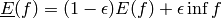
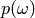

Probability Measures¶
- class improb.lowprev.prob.Prob(pspace=None, mapping=None, lprev=None, uprev=None, prev=None, lprob=None, uprob=None, prob=None, bba=None, credalset=None, number_type=None)¶
Bases: improb.lowprev.linvac.LinVac
A probability measure, implemented as a LinVac whose natural extension is calculated via expectation; see get_precise().
>>> p = Prob(5, prob=['0.1', '0.2', '0.3', '0.05', '0.35']) >>> print(p) 0 : 1/10 1 : 1/5 2 : 3/10 3 : 1/20 4 : 7/20 >>> print(p.get_precise([2, 4, 3, 8, 1])) 53/20 >>> print(p.get_precise([2, 4, 3, 8, 1], [0, 1])) 10/3
>>> p = Prob(3, prob={(0,): '0.4'}) >>> print(p) 0 : 2/5 1 : undefined 2 : undefined >>> p.extend() >>> print(p) 0 : 2/5 1 : 3/10 2 : 3/10
- get_linvac(epsilon)¶
Convert probability into a linear vacuous mixture:

- get_precise(gamble, event=True, algorithm='linear')¶
Calculate the conditional expectation,

where  is simply the probability of the singleton
 :
:self[{omega: 1}, True][0]
- classmethod make_random(pspace=None, division=None, zero=True, number_type='float')¶
Generate a random probability mass function.
>>> import random >>> random.seed(25) >>> print(Prob.make_random("abcd", division=10)) a : 0.4 b : 0.0 c : 0.1 d : 0.5 >>> random.seed(25) >>> print(Prob.make_random("abcd", division=10, zero=False)) a : 0.3 b : 0.1 c : 0.2 d : 0.4